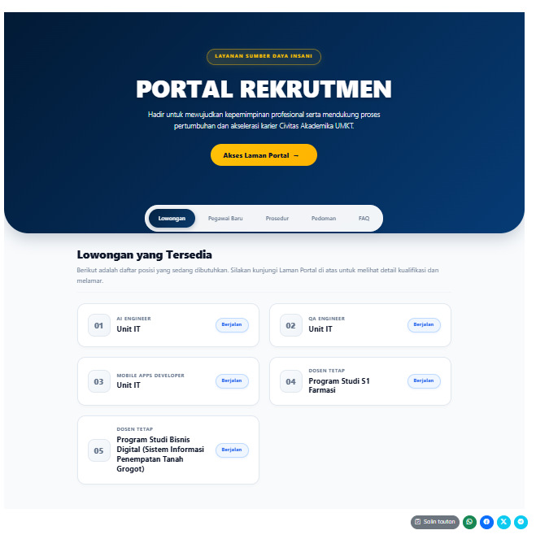
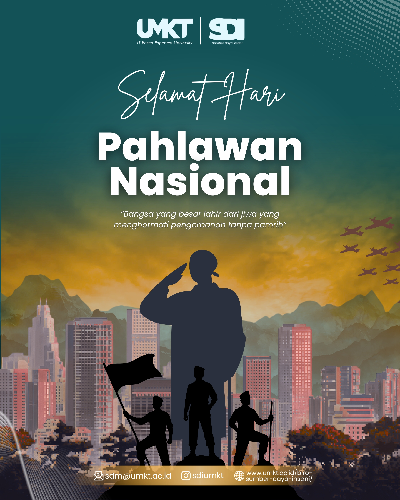
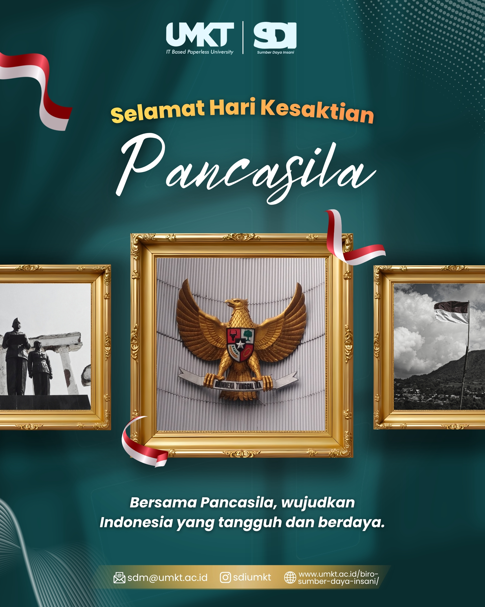
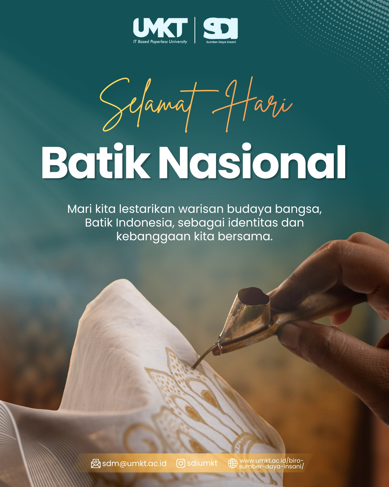
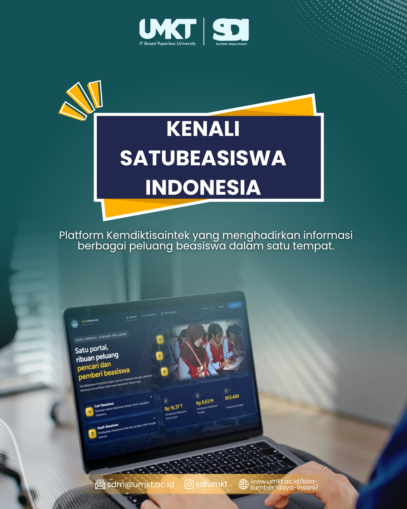
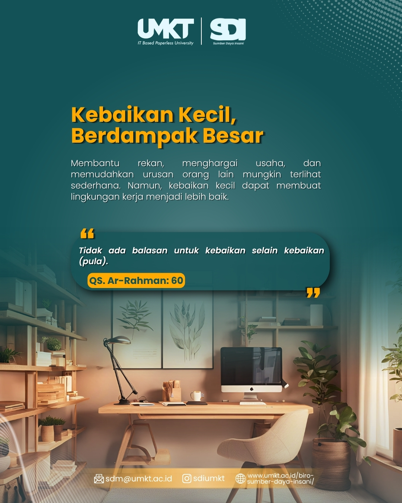
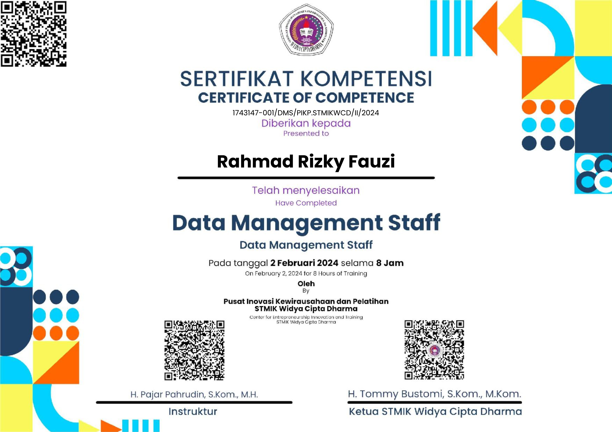
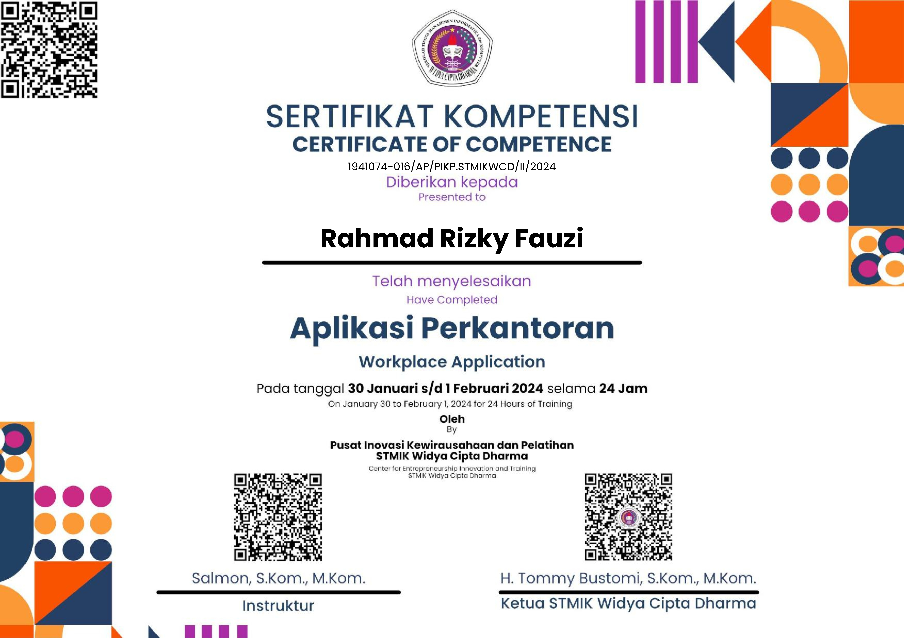
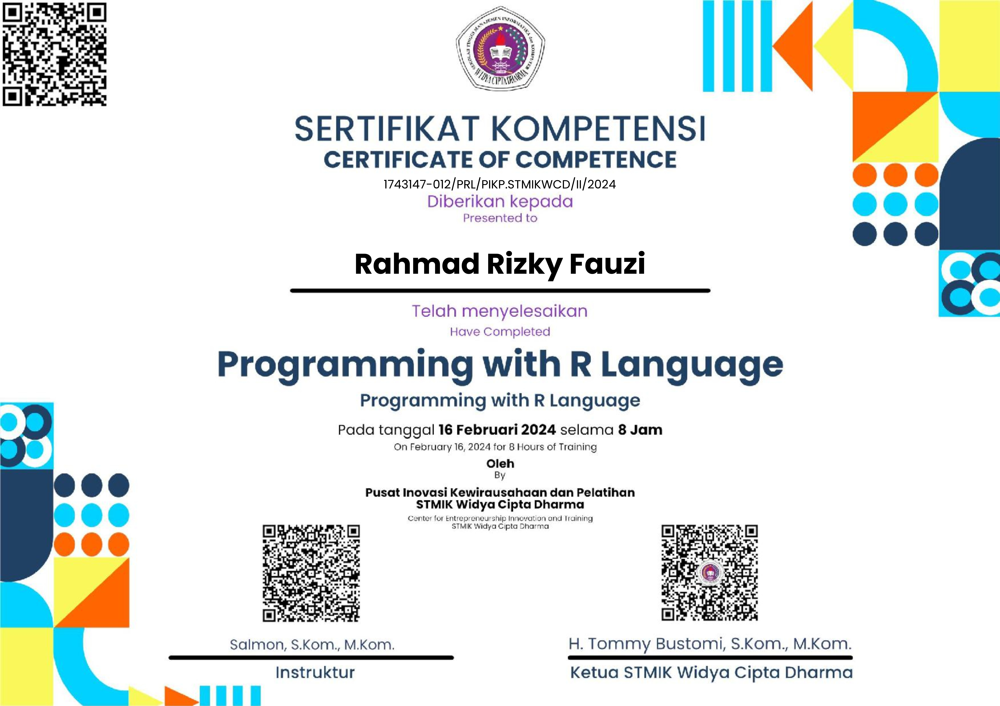
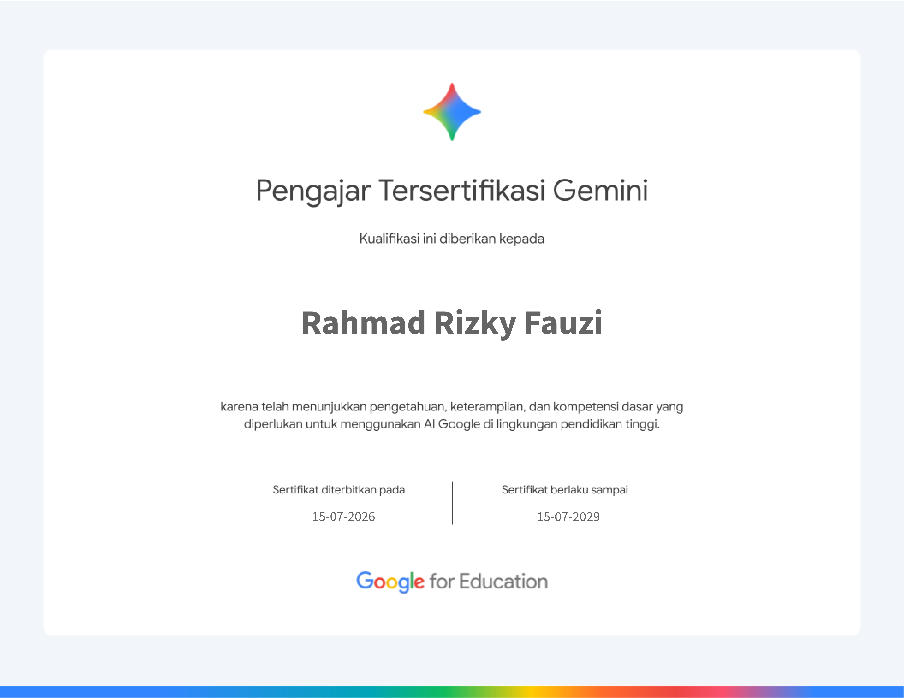

01 / HR & ADMINISTRATION
↗
HR & Administration
Administrasi rekrutmen, administrasi kontrak kerja, pengelolaan data kepegawaian, dokumentasi, dan pengarsipan.
DATA REPORTING & DIGITAL OPERATIONS — PORTFOLIO
Saya memiliki pengalaman dalam administrasi operasional, pengelolaan data, pelaporan, dan pengelolaan informasi digital. Terbiasa menggunakan Microsoft Excel, Google Sheets, CMS, serta JavaScript untuk menyusun informasi terstruktur dan mengembangkan fungsi website sesuai kebutuhan pengguna.
Saya merupakan lulusan S1 Teknik Informatika dengan pengalaman kerja di bidang administrasi sumber daya insani, pengelolaan data, pelaporan, dan operasional digital. Saat ini saya bekerja di Biro Sumber Daya Insani Universitas Muhammadiyah Kalimantan Timur (UMKT), dengan keterlibatan dalam administrasi kepegawaian, rekrutmen, pengelolaan dokumen, serta pengelolaan dan pengembangan website unit.
Saya tertarik menghubungkan kebutuhan operasional dengan pemanfaatan teknologi. Fokus pekerjaan dan pengembangan saya mencakup pengolahan data, penyajian informasi, pengelolaan website berbasis CMS, serta pengembangan fitur digital untuk mempermudah akses informasi.
Kombinasi kemampuan analitis, pemahaman logika teknologi informasi, dan ketelitian pengelolaan administrasi organisasi.
Administrasi rekrutmen, administrasi kontrak kerja, pengelolaan data kepegawaian, dokumentasi, dan pengarsipan.
Pengolahan data, rekapitulasi transaksi, penyusunan laporan operasional, ringkasan data, dan visualisasi informasi.
Pengelolaan website berbasis CMS, pembaruan konten, pengaturan halaman, dan pengelolaan komponen informasi digital.
Menggunakan JavaScript untuk pengolahan dan penyajian data pada website, integrasi Google Sheets, serta fitur pencarian dan filter direktori.
Power BI digunakan dalam proyek mandiri berbasis data simulasi. Frontend / Web Development merupakan arah pengembangan, bukan klaim jabatan atau keahlian profesional yang sudah dikuasai sepenuhnya.
Portofolio ini memisahkan pengalaman kerja nyata dari proyek mandiri berbasis data simulasi. Pilih kartu untuk melihat konteks, kontribusi, proses, hasil, dan bukti visual.

Pengelolaan konten dan informasi website SDI, penataan halaman, integrasi data kepegawaian, serta pengembangan direktori dan komponen layanan digital.

Pengelolaan data transaksi penyewaan, pendapatan, pelanggan, dan kategori barang menggunakan Google Sheets untuk mendukung pemantauan operasional.

Pengolahan dataset penjualan simulasi menjadi indikator dan visualisasi untuk melihat tren serta kontribusi produk atau kategori.

Pengolahan dataset penjualan simulasi menjadi ringkasan dan visualisasi berdasarkan periode serta kategori.
✳ Proyek simulasi diberi label secara eksplisit. Tangkapan layar proyek kerja nyata perlu disamarkan apabila memuat informasi internal atau data pribadi.
Galeri ringkas untuk desain media sosial, konten HR, dan infografis.





Pengalaman kerja di bidang administrasi SDM, pengelolaan data, pelaporan operasional, dan pengelolaan informasi digital.
Universitas Muhammadiyah Kalimantan Timur (UMKT) · Samarinda
Bekantan Outdoor
Latar belakang pendidikan informatika dan pelatihan yang mendukung pengelolaan data, aplikasi perkantoran, dan teknologi digital.
STMIK Widya Cipta Dharma
Fondasi akademik di bidang Teknik Informatika sebagai dasar pemahaman sistem informasi, pengolahan data, logika pemrograman, dan pengembangan web.
Pastikan nama program, tahun, dan lembaga penerbit sama dengan dokumen sertifikat asli. Gunakan gambar sertifikat atau bukti yang jelas dan sesuai.
Dokumen sertifikasi sedang dalam proses penerbitan.
SKL diterbitkan; sertifikat kompetensi dalam proses penerbitan.




LET'S CONNECT & COLLABORATE
Saya terbuka untuk kesempatan kerja, kolaborasi, dan diskusi terkait pengelolaan data, pelaporan operasional, operasional digital, serta pengembangan website.
Samarinda, Kalimantan Timur, Indonesia